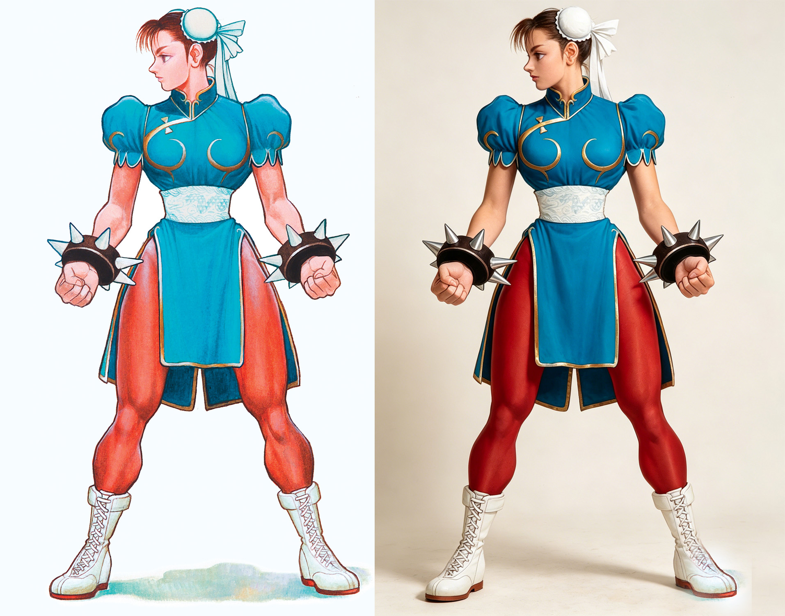

三十年神作变"违禁图"？春丽高清版引热议，老玩家泪目
谁能想到？那些刻在我们记忆深处的经典游戏海报，如今竟因"高清化"而惹上了一身麻烦！

最近不少玩家用AI把三十年前的街机老图重制高清版，结果却频频被下架、惹出争议。这画面想想就荒诞——当年满大街游戏厅海报贴得铺天盖地没人管，如今用技术还原经典反而"过不了审"了？
咱们回想一下，三十年前那会儿，要是谁手里有一张游戏海报，那绝对是全班最靓的仔。同学带本杂志到学校，大伙儿围上去恨不得把脸贴在上面。《街霸》《拳皇》流行那阵子，街上到处是海报，可兜里没几个钢镚儿的咱们也只能干瞪眼过过眼瘾。家里条件好点的哥们儿，墙上贴满《灌篮高手》《七龙珠》《美少女战士》的海报，去他家玩一趟，眼睛都挪不开，那叫一个羡慕！

说实话，那时候第一次看到春丽的人设插画，真有种被雷劈中的感觉——怎么有人能画出这样的姑娘？即使是后来网络普及了、各种同人图看了一大堆，真正接触到官方人物设计图的那一刻，还是被震得说不出话。这也看得出早年插画师的功力有多深厚，西村绢、森气楼这些大师的作品，哪怕再过三十年五十年，依然不会过时，每一张都是艺术品啊！

如今AI技术上来了，玩家们拿老图一生成，高清版、真人版全都能整出来，看上去确实精彩。早年的怀旧画风重新焕发了生机，但同时也带来了新麻烦——被下架、被审核卡住，甚至被指"违规"。
说起来，里头争议最大的，还得是咱们的春丽姐姐。《少年街霸》时期的春丽，紧身裤把身材勾勒得一清二楚，但那时候画风模糊，美感根本看不清楚。如今高清还原之后才看清插画大师当年的笔触——那会儿的春丽表情虽然坚毅，但脸上还带着稚气，毕竟才十多岁的小姑娘。
到了《街头霸王3.3》，CAPCOM本来都觉得格斗游戏走到头了，直接让春丽成大龄宗师，在唐人街教小孩武艺。那是2D时代的巅峰之作，也是无数老玩家心里的白月光。结果谁都没想到，十年后《街霸4》又硬生生把格斗游戏救活了，但画风明显偏向欧美审美，春丽那"粗枝大叶"的粗腿设计一出来，亚洲玩家直接炸锅了。
可效果呢？欧美火爆之后反哺了全世界，所有玩家最后都爱上了这个形象。再后来《街霸6》剧情推进到3.3之后，但因为剧情早就定型了，春丽只能继续保持着特定状态，甚至成了李芬的干妈——这就是剧情定死之后的无奈啊！
如今高清还原之后，大家才看清当年大师们笔下藏了多少细节。街机虽然早就成了历史，但反而被怀旧玩家追捧得越来越凶。如今已经是10后的天下了，新游戏一茬接一茬，可咱们这代人早已波澜不惊，再好玩的新作也提不起多大劲儿。
闯荡了这么多年，过了不惑之年再回头看看，才明白游戏厅那段无忧无虑的时光到底有多奢侈。看着那些被高清还原后的经典角色，或许咱们该庆幸——那个年代画师们的坚守，才是真正的艺术品。
兄弟们，你们觉得现在的AI重制版，是比当年的原版更完美了，还是说那股子"味道"彻底变了？评论区聊聊你心中最美的《街霸》角色吧！
关于我们
📱 公众号名称：三天笔记
✍️ 作者：曾三天
扫码关注公众号，获取每日最新资讯

商务合作与版权
商务合作 / 内容投稿 / 品牌推广
请关注公众号「三天笔记」后台留言联系
版权声明：本文由作者整理，转载需注明出处。